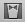
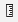

El problema de colocar los elementos de la interfaz en unas coordenadas fijas es que si rota la pantalla o cambiamos de dispositivo, el interfaz no se va adaptar adecuadamente, ya que las dimensiones han cambiado y las coordenadas antes especificadas ahora pueden no tener sentido.
Para que la previsualización del interfaz en Xcode tenga el mismo aspecto que las figuras, hay que desmarcar la casilla “Use size classes” del “File Inspector” (Área a la derecha de la pantalla, primer icono)
Por ejemplo, supongamos que queremos centrar un botón en la pantalla, tanto vertical como horizontalmente. En principio parece que basta con moverlo con el ratón hacia el centro. En el momento que el botón está centrado, aparecen unas guías punteadas que nos lo indican.
Si ejecutamos la aplicación en el simulador veremos que efectivamente está centrado. Pero si rotamos la pantalla (tecla Cmd-Flecha izquierda) podremos ver que cuando cambia la resolución no es así.
Necesitamos algún sistema que adapte automáticamente las dimensiones de los componentes de la interfaz a la resolución actual. En iOS ese sistema es Autolayout. Es un sistema declarativo y basado en restricciones. El sistema usa las restricciones especificadas para calcular automáticamente el frame de cada vista de la interfaz, y adaptarlo a las dimensiones actuales de la ventana.
Para especificar qué aspecto queremos que tenga la interfaz independientemente de la resolución hay que añadir restricciones. Básicamente las hay de dos tipos:
Hay dos formas de añadir restricciones en XCode: “haciendo clic y arrastrando” con el ratón o bien a través de la barra de herramientas de AutoLayout.
Cuando se añaden restricciones de espaciado con respecto al borde superior e inferior de la pantalla, puede verse que en realidad no se están referenciando los bordes sino lo que Xcode llama
top layout guideybottom layout guide. La verdadera utilidad de estas guías es que se “mueven automáticamente” para dejar espacio a las barras de navegación y de botones que veremos cuando usemos navigation controllers y tab bar controllers, asegurándonos así de que dichas barras no tapan a nuestras vistas.
En la parte inferior derecha del storyboard hay una barra de botones específicos para autolayout
Si queremos conseguir que funcione el ejemplo anterior en el que queríamos centrar horizontal y verticalmente el botón, pulsamos sobre el icono de Align (el primero), marcamos las casillas de Horizontal center in container y Vertical center in container y pulsamos sobre el botón que ahora pondrá Add 2 constraints para hacer efectivas las restricciones.
Las líneas de guía, que antes aparecían punteadas, ahora serán continuas indicando que ahora son restricciones de autolayout. Dichas restricciones podemos verlas en varios sitios de Xcode:
En el área de Document outline, que es accesible pulsando sobre el icono %2018.03.41.png) que aparece en la parte inferior izquierda del storyboard. Aquí podemos ver un “árbol” desplegable con las restricciones.
que aparece en la parte inferior izquierda del storyboard. Aquí podemos ver un “árbol” desplegable con las restricciones.
Utilities de la derecha de la pantalla, dentro del Size inspector (el pequeño icono con una regla %2018.09.58.png) ) aparecerán sus propiedades, que podemos editar (luego veremos qué significan).
) aparecerán sus propiedades, que podemos editar (luego veremos qué significan).Backspace se eliminará.Size inspector aparece una lista de restricciones. Cada una tiene un botón Edit para cambiar sus propiedades. Las mismas operaciones también las tenemos disponibles en la opción Editor del menú principal, a través de los submenús Align y Pin.
Esta forma es algo más ágil que la anterior pero requiere de cierta práctica. Cuando queremos establecer una restricción entre dos elementos arrastramos de uno a otro manteniendo pulsada la tecla Ctrl (igual que para crear un outlet o un action). Cuando soltamos el botón del ratón, aparece un menú contextual donde elegir la restricción.
Las opciones disponibles en el menú dependen de la dirección y sentido en que se haya arrastrado:
Generalmente cuando comenzamos a añadir restricciones, las líneas que las representan aparecen en color naranja en lugar de azul. Esto sucede porque todavía las restricciones son insuficientes para determinar unívocamente las coordenadas del frame del componente. Por ejemplo si acabamos de crear un botón y lo centramos verticalmente, lo hemos “fijado” en el eje de las x pero no así en el de las y. Además se muestra un contorno dibujado en línea punteada que indica dónde calcula Xcode que acabará posicionándose el componente con las restricciones actuales (y que muy probablemente no sea donde nosotros queremos).
Otro problema típico es mover el elemento una vez se ha establecido la restricción, de modo que no ocupa la posición que esta indica. Las líneas de restricción también aparecerán en naranja, y el número que indica su tamaño tendrá un símbolo + o - para indicar el desplazamiento.
Cuando las restricciones son contradictorias, las líneas que las representan aparecen en color rojo. Por ejemplo en la siguiente figura hemos intentado especificar un espaciado de 20 puntos con el margen derecho y simultáneamente que esté centrado en horizontal. Claramente esto es imposible, y así lo indica Xcode.
Cuando hay problemas con las restricciones estos se muestran también en el Document outline del storyboard. En el ángulo superior derecho del Document outline aparece una pequeña flecha roja indicando que hay problemas, y si la pulsamos aparecerá la lista de restricciones contradictorias e insuficientes.
Podemos intentar resolver estos problemas de forma automática. Para eso está el botón Resolve autolayout issues de la barra de botones de autolayout (recordar que está en la esquina inferior derecha del storyboard). Hay varias posibilidades:
Update frames: queremos recalcular las posiciones y dimensiones de los frames usando las restricciones actuales. Si hemos movido los elementos con el ratón, volverán a “su posición”.Update restrictions: si hemos movido los elementos, Xcode intentará recalcular las restricciones para que se correspondan con la posición actual.Add missing constraints: basándose en la posición actual de los elementos, Xcode intentará inferir y añadir las restricciones adecuadas para que el layout deje de ser ambiguo.Reset to suggested constraints: el equivalente a eliminar todas las restricciones (Clear constraints) y luego seleccionar Add missing constraints.Aunque podemos visualizar el efecto de las restricciones ejecutando la aplicación en el simulador, es un proceso un poco tedioso, y más si queremos comprobar el aspecto en distintos dispositivos con distinto tamaño de pantalla. Tendríamos que ejecutar el simulador para cada uno de ellos. Desde Xcode 5 existe la posibilidad de previsualizar el aspecto de la interfaz (incluyendo por supuesto el autolayout).
Para previsualizar la interfaz, desde el editor del storyboard seleccionamos el Assistant editor (icono  de la barra de herramientas). Como siempre sucede con este tipo de editor, el área principal se dividirá en 2. Si en la parte derecha no aparece la preview, la podemos seleccionar manualmente con los iconos de su zona superior
En la preview se ve el aspecto que va a tener la interfaz en un determinado hardware. En la parte inferior pone el nombre, por ejemplo “iPhone 4-inch”. Si pasamos el ratón por el nombre aparecerá a su izquierda un botón que sirve para rotar la pantalla.
En la parte inferior izquierda de la ventana de preview hay un símbolo + que sirve para añadir otros modelos de dispositivo a la previsualización.
Aunque hemos dicho que autolayout calcula el frame de cada componente, hasta ahora hemos ignorado el tamaño de los mismos. Centrar en horizontal y vertical elimina la ambigüedad en cuanto a en qué coordenadas “anclar” el frame pero ¿qué hay de su ancho y alto?.
Para muchos componentes (UILabel, UIButton, UIImage) no es necesario especificar un tamaño ya que lo tienen por defecto (el llamado “tamaño intrínseco” en el argot de autolayout). En el API la propiedad correspondiente es intrinsicContentSize. Lo más habitual es que sea el tamaño del texto que contienen.
No obstante, también podemos poner restricciones sobre el tamaño. Podemos fijar el ancho y/o el alto o el aspect ratio. Estas son restricciones del tipo pin y por tanto las podemos encontrar donde encontramos las de espaciado entre componentes (en el menú principal o en la barra de botones de autolayout). Si usamos ctrl-arrastrar con el ratón bastará con que arrastremos sin salirnos del componente (al arrastrar en horizontal se nos dará la posibilidad de finar el ancho y lo mismo con el alto si arrastramos en vertical).
Si especificamos el tamaño mediante una restricción podemos forzar a que el contenido del botón tenga que “cortarse” porque no cabe, o bien que tenga que añadirse un padding al sobrar espacio.
Internamente, cada restricción se formula como una ecuación lineal en la que:
item1.atributo1 = multiplicador * item2.atributo2 + cte
Algunas restricciones no son ecuaciones sino inecuaciones, sustituyendo el símbolo = por <= o >=.
Es decir, desde el punto de vista formal, lo que hace autolayout es resolver un sistema de ecuaciones lineales.
Estas propiedades podemos verlas en el Size inspector (parte derecha de la pantalla, icono de la regla ). Si seleccionamos un componente de UI aparecerán aquí todas sus restricciones, que podemos editar pulsando en Edit. Por ejemplo, aquí vemos las restricciones de un botón centrado en el eje de las X y con un espaciado estándar (8 puntos) con respecto a la guía inferior.
Podemos observar en la figura las propiedades de la restricción, que se corresponden directamente con los coeficientes del lado derecho de la ecuación lineal (el multiplicador y la constante). Además aparece una prioridad, que explicaremos en el siguiente apartado. Haciendo clic en el desplegable con el símbolo = podemos cambiar la ecuación por una inecuación.
En nuestro ejemplo la constante es 0 y el multiplicador 1 porque queremos centrar el componente en el contenedor, es decir
contenedor.centerX = componente.centerX
Podemos por ejemplo cambiar la constante por 50, con lo que conseguiremos que el componente esté desplazado 50 puntos a la izquierda de la posición de “centrado en X”.
Si en lugar de seleccionar el componente GUI seleccionamos directamente una restricción y nos vamos al Size inspector podremos editar directamente las propiedades de la restricción, incluyendo también los propios atributos.
Cada restricción tiene asignada una prioridad, que es un valor numérico que especifica su “importancia” (a mayor valor, mayor prioridad). El valor por defecto es 1000, que significa que el sistema entiende que la restricción debe cumplirse. Valores menores que 1000 indican que el sistema intentará cumplir la restricción pero que es posible que no lo haga si hay restricciones contradictorias de mayor prioridad.
Podemos cambiar/ver la prioridad actual de la misma forma que podemos cambiar/ver el resto de propiedades de la restricción (ver apartado anterior).
Además de las restricciones, también los componentes GUI tienen dos valores de prioridad, relativos al tamaño:
En lugar de usar el editor visual del Interface Builder podemos especificar las restricciones en el código fuente. Esto puede resultar interesante en diversas situaciones: a veces los elementos de la interfaz se crean dinámicamente y por tanto no se puede especificar el layout en Xcode. Otras veces puede ser que aunque los elementos del interfaz no cambien sí queramos que cambien dinámicamente las restricciones para conseguir distintos efectos de layout.
Hay dos formas de hacerlo: directamente con el API de autolayout o con un mayor nivel de abstracción usando el llamado “Visual Format Language”. Si podemos elegir, la mejor forma es la segunda, ya que es mucho más intuitivo especificar las restricciones y entenderlas leyendo luego el código.
Cada restricción es un objeto de la clase NSLayoutConstraint. Para crearla se usa el método constraintWithItem:… que, como vamos a ver, especifica directamente parámetro por parámetro cada una de las propiedades de la restricción. Por ejemplo, supongamos que queremos centrar un componente (que tenemos en la variable button) en su contenedor (variable superview) en el eje de las X. La restricción sería algo como
superview.centerX = 1*button.centerX+0
Donde se ha explicitado la constante y el multiplicador para ver más clara la correspondencia directa con el código, donde se haría como:
NSLayoutConstraint *constraint = [NSLayoutConstraint
constraintWithItem:button
attribute:NSLayoutAttributeCenterX
relatedBy:NSLayoutRelationEqual
toItem:superview
attribute:NSLayoutAttributeCenterX
multiplier:1.0
constant:0.0]
Una vez creada la restricción para que tenga efecto hay que añadirla a la vista con addConstraint
[self.miBoton.superview addConstraint:constraint];
Como vemos, hemos añadido la restricción al contenedor del botón. Como norma general, si son vistas “madre/hija” la añadiremos a la “madre”, y en otro caso al ancestro común más cercano de ambas vistas. Por ejemplo si fuera una relación entre dos botones dentro del mismo contenedor la añadiríamos al contenedor.
La conversión de ecuación matemática a llamada del API es bastante directa, pero tiene el problema de que no es fácil y rápido deducir intuitivamente la restricción leyendo el código. Es mucho más intuitivo leer “el componente debe estar centrado en el eje X pero desplazado 10 pixels a la izquierda” que leer superview.centroX = componente.centroX + 10.
La descripción formal pero a la vez intuitiva de un conjunto de restricciones se puede hacer con una ingeniosa “representación en modo texto” de la representación gráfica de las restricciones llamada Visual Format Language. Dicho formato permite representar un conjunto de restricciones con una cadena de caracteres. La representación usa símbolos “semi-gráficos”, un poco al estilo del ASCII-ART (salvando las distancias). Así, por ejemplo si queremos especificar que entre dos componentes debe haber una separación estándar (8 pixels) usaríamos la cadena:
[boton1]-[boton2]
Donde los corchetes indican un componente, y el -` indica la separación estándar. La cadena se parece razonablemente a la representación gráfica que podríamos ver en Xcode de la misma restricción.
Hay que indicar que boton1 y boton2 no son exactamente nombres de variables a diferencia de cuando usamos el API de constraintWithItem:..., sino etiquetas arbitrarias.
La llamada al API para crear esta restricción usando el visual format language sería algo como:
[NSLayoutConstraint constraintsWithVisualFormat:
@“[cancelButton]-[acceptButton]”
options: NSLayoutFormatDirectionLeadingToTrailing |
NSLayoutFormatAlignAllCenterY
metrics:nil
views:viewsDictionary];
donde:
NSString*options es una máscara de bits formada a partir de enumerados describiendo la dirección y la alineación de los componentesmetrics se usa si hay constantes en la restricción (no es el caso del ejemplo). Es un diccionario en el que las claves son los nombres de las constantes y los valores son los de las constantes.views, es un diccionario donde las claves son los nombres de componentes en la cadena y los valores son las variables correspondientes a las vistas. Habitualmente se usarán los mismos nombres, para simplificar, en cuyo caso podemos crear el diccionario automáticamente con NSDictionaryOfVariableBindings, al que le pasamos un número variable de argumentos con las variables de las vistas, por ejemplo:UIButton *cancelButton = ...;
UIButton *acceptButton = ...;
NSDictionary *views = NSDictionaryOfVariableBindings(cancelButton,
acceptButton);
Algunos ejemplos adicionales de cadenas de formato:
[boton1]-20-[boton2] separación de 20 puntos[boton1(50)]-20-[boton2(>=50)] entre paréntesis especificamos el ancho del botón, nótese que se pueden poner desigualdades[boton1]-20@800-[boton2] las prioridades se ponen con la @[boton1]-20-[boton2(==boton1)] el botón 2 debe ser del mismo tamaño que el 1.V:[topField]-10-[bottomField] con la V especificamos que es un layout en vertical, los dos campos estarán uno encima del otro separados por una distancia de 10 puntos.|-[find]-[findNext]-[findField(>=20)]-|una línea completa de layout, donde las barras verticales representan los bordes del contenedor.Se recomienda consultar la documentación de Apple para más información sobre la sintaxis y ejemplos adicionales.
En el diseño del formato, se ha preferido la claridad y el paralelismo con la representación gráfica a la expresividad. Como resultado, ciertas restricciones no son expresables. Por ejemplo no se puede especificar que el ancho de un botón sea el doble que el de otro.
Videos de las sesiones de la Apple WWDC 2012 (requieren un id. de Apple)